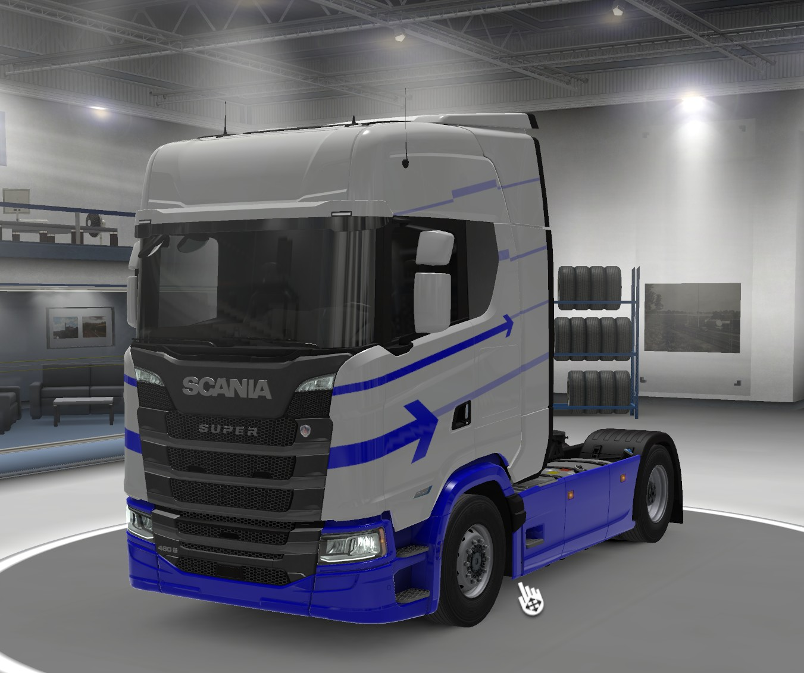
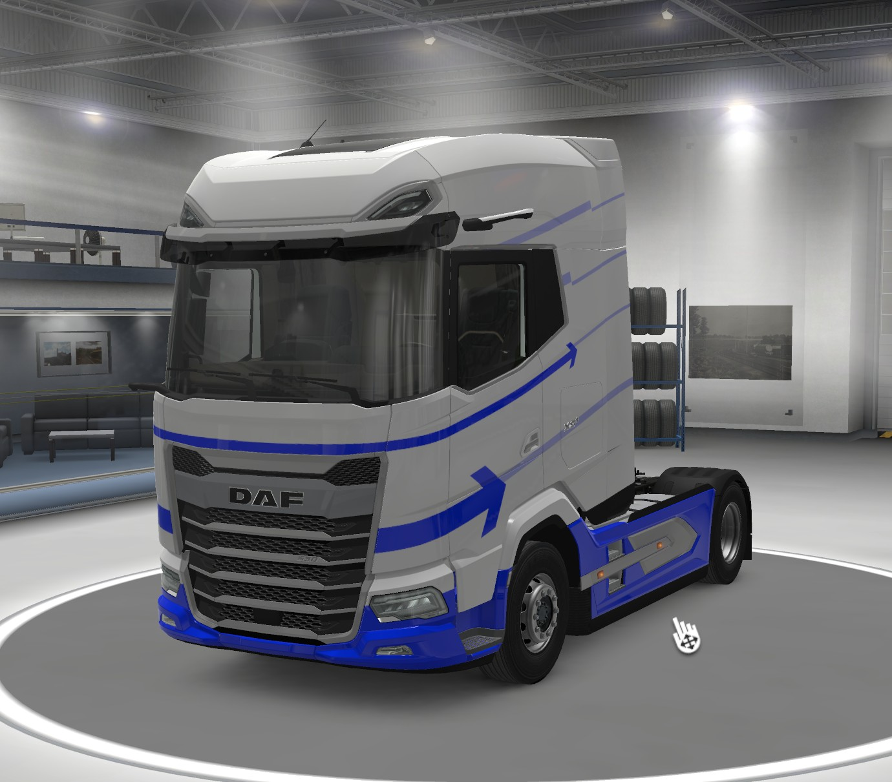
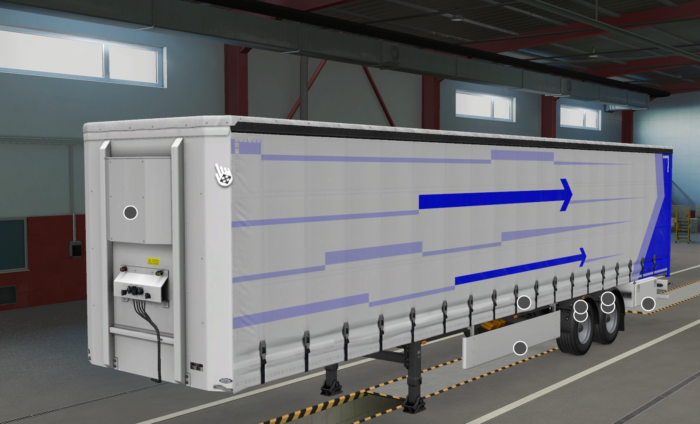

Schwarzenberg Erzgebirge
Unsere Trucks – gemeinsam auf Achse! Moderne Fahrzeuge für den Fernverkehr in ETS2 und ATS.
Moderne Fahrzeuge und zuverlässige Technik – gemeinsam auf den Straßen Europas und Amerikas.

Unser Firmenfahrzeug für den Fernverkehr.
Blau-weißes Firmendesign mit Erzgebirge-Motiv.
Hersteller: Scania
Motorleistung: 770 PS
Fahrzeugtyp: Sattelzugmaschine
Einsatz: Fernverkehr
Simulator: ETS2

Moderner Fernverkehr mit Komfort und moderner Fahrzeugtechnik.
Individuelles blau-weißes Firmendesign.
Hersteller: DAF
Motorleistung: 600 PS
Fahrzeugtyp: Sattelzugmaschine
Einsatz: Fernverkehr
Simulator: ETS2 / ATS

Unser Auflieger für den täglichen Gütertransport.
Blau-weißes Firmendesign von Transport Ostservice.
Fahrzeugtyp: Standard-Planenauflieger
Aufbau: Curtainsider / Plane
Einsatz: Gütertransport
Design: Blau-Weiß
Firma: Transport Ostservice
Jeder Kilometer zählt. Gemeinsam bringen wir unsere virtuelle Spedition auf die Straßen Europas und Amerikas.